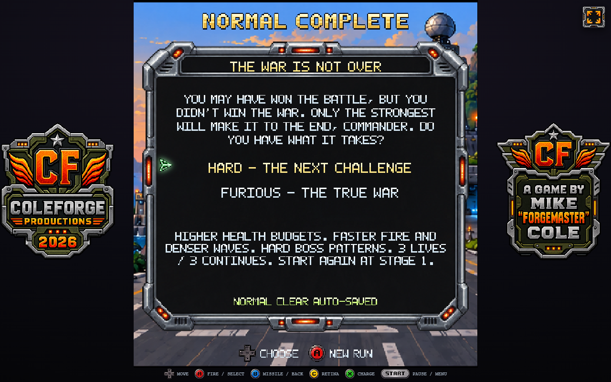
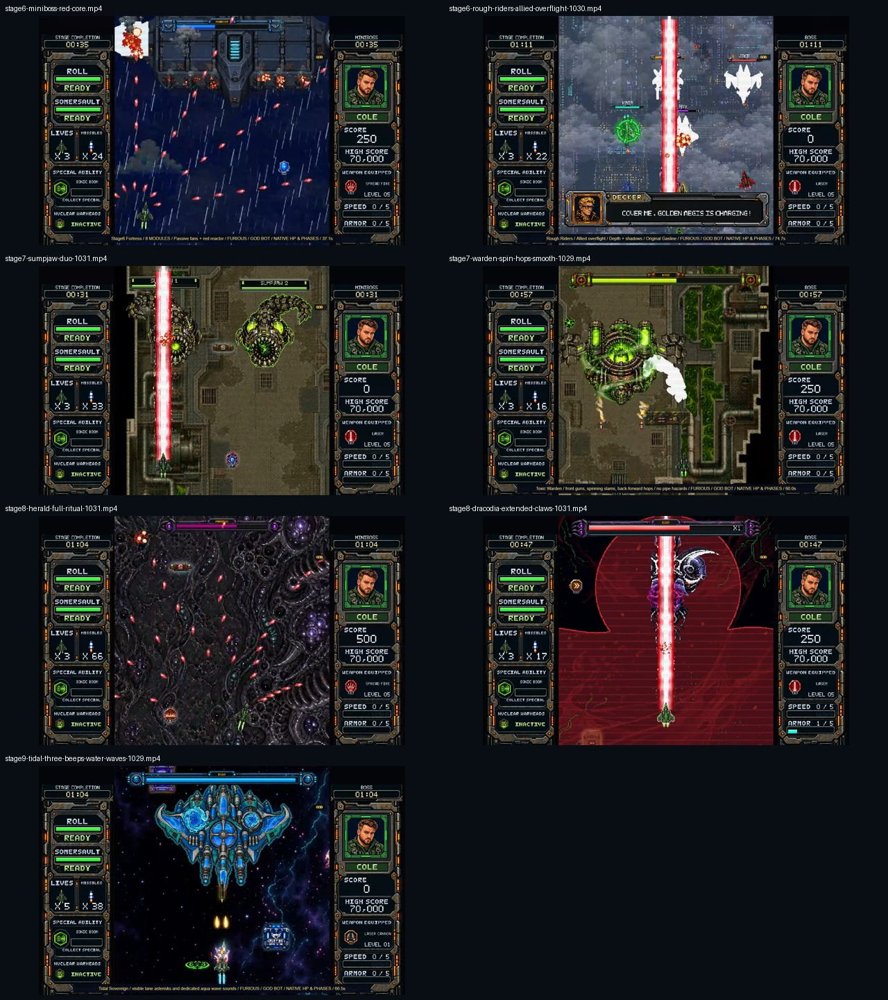

Stronger boss decisions.
A new finish for Normal.
Installed fixes, native footage and a practical balance plan. Event Horizon was the main target. Dracodia redesigns remain proposals for your approval.
Continuous spin. Real escape gaps.
The white core and hull still share one rotation speed. Short laser pulses now leave room to move, the dash warns earlier, and the return has a visible recovery.
Native GOD + player-input bot. No enemy HP, phase or timer writes during filming. This verifies the fight and presentation; it is not a human survival clear.
Compare with the previous recording
The prior film lasts 163 seconds and carries 10,965HP. Loadout/adaptive pressure and targeting differ, so this is not a controlled timing benchmark.
| Decision | Hard | Furious |
|---|---|---|
| Spiral bursts | 3 ×0.20s /0.68s gaps | 4 ×0.22s /0.52s gaps |
| Orb volley | 3 shots /220px/s | 5 shots /250px/s |
| Recovery | 1.65s | 1.35s |
| Half-health route | One dash decision per book | Two dash decisions per book |
The old spiral had a path, but very little room for error. The movement diagnostic found a much wider set of reachable positions in the revised attack. Human testing at basic speed is still the next step.
Home to Earth. Then choose the real war.
The real clear autosaves at Chronos's defeat. Results and Forge rewards finish, your pilot returns home, then Hard or Furious fades into pilot select for a fresh Stage 1 operation. Furious is identified as the intended route to the true ending.
This film is a staged preview of the actual game flight/menu/fade. It uses player input for the choice and does not write a completion save. Actual defeat/save behavior was tested separately.

Existing saves remain compatible. A completed Normal save reopens this choice. Save failure blocks restart and clearly asks for a retry.
Shorter empty time. Distinct difficulty choices.
Carrier → Nightwing
The carrier's modules and protected hull remain intact. Nightwing's following life is 3,960 HP on Hard / 4,680 on Furious. The new full film lasts 104 seconds, compared with 221 in the earlier recording; health, aiming and pickups all affect that comparison.
Tidal Sovereign
Hard now has 3 forward spread lanes per turret,3 mortars,4 rain impacts and6 lamp bubbles. Furious retains 5 lanes,4 mortars,6 impacts and10 bubbles. Both retain the complete three-warning water-wall sequence and sounds. His return from Slip N Slide is now protected.
Reviewed late encounters and priorities

Next priorities: minimum-weapon access to required parts; one heavy threat at a time in the squad fight; a clear Warden landing exit; and finite Herald glass/hazard overlap. Dracodia needs a new uninterrupted current-build recording before changing his accumulated life budget.
The full boss analysis
45 focused native checks passed. Fresh films decode fully and contain audible sound. No browser/draw errors or missing-asset HTTP responses occurred.
The full repository suite still reports the same five pre-existing failures in older flash, Chronos opening and Stage X route checks. They are listed in the report.
The report includes the per-boss risks, health comparisons, recommended Hard/Furious strategy and approval-only Dracodia proposals. No pending alternative boss concept was activated.